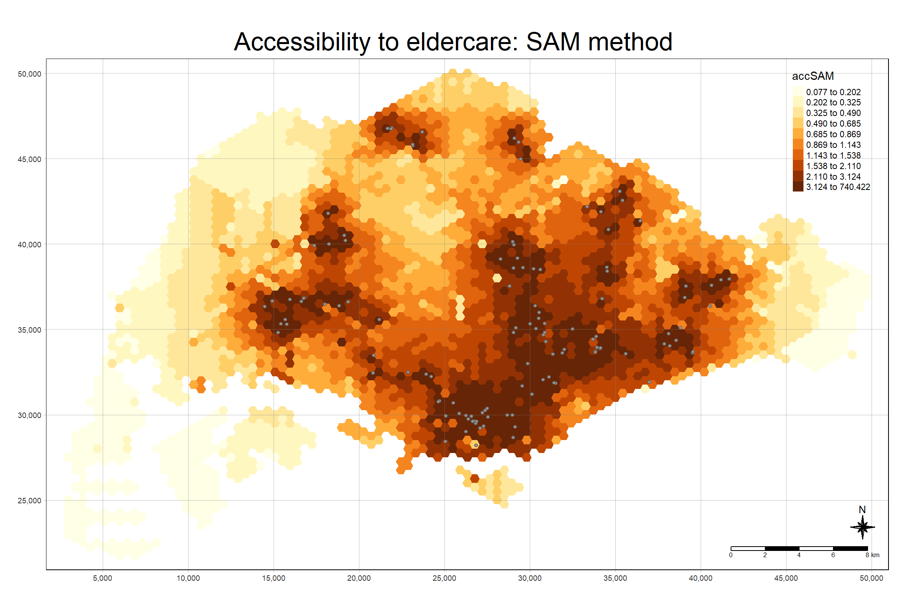

pacman::p_load(tmap, SpatialAcc, sf,
ggstatsplot, reshape2,
tidyverse)1.0 Getting Started
Four data sets will be used in this hands-on exercise, they are:
MP14_SUBZONE_NO_SEA_PL: URA Master Plan 2014 subzone boundary GIS data. This data set is downloaded from data.gov.sg.hexagons: A 250m radius hexagons GIS data. This data set was created by using st_make_grid() of sf package. It is in ESRI shapefile format.ELDERCARE: GIS data showing location of eldercare service. This data is downloaded from data.gov.sg. There are two versions. One in ESRI shapefile format. The other one in Google kml file format. For the purpose of this hands-on exercise, ESRI shapefile format is provided.OD_Matrix: a distance matrix in csv format. There are six fields in the data file. They are:origin_id: the unique id values of the origin (i.e.fidof hexagon data set.),destination_id: the unique id values of the destination (i.e.fidofELDERCAREdata set.),entry_cost: the perpendicular distance between the origins and the nearest road),network_cost: the actual network distance from the origin and destination,exit_cost: the perpendicular distance between the destination and the nearest road), andtotal_cost: the summation ofentry_cost,network_costandexit_cost.
All the values of the cost related fields are in metres.
Before we getting started, it is important for us to install the necessary R packages and launch them into RStudio environment.
The R packages need for this exercise are as follows:
- Spatial data handling
- sf
- Modelling geographical accessibility
- spatialAcc
- Attribute data handling
- tidyverse, especially readr and dplyr
- thematic mapping
- tmap
- Staistical graphic
- ggplot2
- Statistical analysis
- ggstatsplot
The code chunk below installs and launches these R packages into RStudio environment.
Notice that with tidyverse, we do not have to install readr, dplyr and ggplots packages separately. In fact, tidyverse also installs other R packages such as tidyr, stringr, forcats, tibble, purrr and magrittr.
2.0 Geospatial Data Wrangling
2.1 Importing geospatial data
Three geospatial data will be imported from the data/geospatial sub-folder. They are MP14_SUBZONE_NO_SEA_PL, hexagons and ELDERCARE.
The code chunk below is used to import these three data sets shapefile by using st_read() of sf packages.
mpsz <- st_read(dsn = "../../data/geospatial", layer = "MP14_SUBZONE_NO_SEA_PL")Reading layer `MP14_SUBZONE_NO_SEA_PL' from data source
`C:\wanshen123\IS415-GAA\data\geospatial' using driver `ESRI Shapefile'
Simple feature collection with 323 features and 15 fields
Geometry type: MULTIPOLYGON
Dimension: XY
Bounding box: xmin: 2667.538 ymin: 15748.72 xmax: 56396.44 ymax: 50256.33
Projected CRS: SVY21hexagons <- st_read(dsn = "../../data/geospatial", layer = "hexagons") Reading layer `hexagons' from data source
`C:\wanshen123\IS415-GAA\data\geospatial' using driver `ESRI Shapefile'
Simple feature collection with 3125 features and 6 fields
Geometry type: POLYGON
Dimension: XY
Bounding box: xmin: 2667.538 ymin: 21506.33 xmax: 50010.26 ymax: 50256.33
Projected CRS: SVY21 / Singapore TMeldercare <- st_read(dsn = "../../data/geospatial", layer = "ELDERCARE") Reading layer `ELDERCARE' from data source
`C:\wanshen123\IS415-GAA\data\geospatial' using driver `ESRI Shapefile'
Simple feature collection with 120 features and 19 fields
Geometry type: POINT
Dimension: XY
Bounding box: xmin: 14481.92 ymin: 28218.43 xmax: 41665.14 ymax: 46804.9
Projected CRS: SVY21 / Singapore TMThe report above shows that the R object used to contain the imported MP14_SUBZONE_WEB_PL shapefile is called mpsz and it is a simple feature object. The geometry type is multipolygon. it is also important to note that mpsz simple feature object does not have EPSG information.
2.2 Updating CRS information
The code chunk below updates the newly imported mpsz with the correct ESPG code (i.e. 3414)
mpsz <- st_transform(mpsz, 3414)
eldercare <- st_transform(eldercare, 3414)
hexagons <- st_transform(hexagons, 3414)After transforming the projection metadata, you can verify the projection of the newly transformed mpsz_svy21 by using st_crs() of sf package.
The code chunk below will be used to varify the newly transformed mpsz_svy21.
st_crs(mpsz)Coordinate Reference System:
User input: EPSG:3414
wkt:
PROJCRS["SVY21 / Singapore TM",
BASEGEOGCRS["SVY21",
DATUM["SVY21",
ELLIPSOID["WGS 84",6378137,298.257223563,
LENGTHUNIT["metre",1]]],
PRIMEM["Greenwich",0,
ANGLEUNIT["degree",0.0174532925199433]],
ID["EPSG",4757]],
CONVERSION["Singapore Transverse Mercator",
METHOD["Transverse Mercator",
ID["EPSG",9807]],
PARAMETER["Latitude of natural origin",1.36666666666667,
ANGLEUNIT["degree",0.0174532925199433],
ID["EPSG",8801]],
PARAMETER["Longitude of natural origin",103.833333333333,
ANGLEUNIT["degree",0.0174532925199433],
ID["EPSG",8802]],
PARAMETER["Scale factor at natural origin",1,
SCALEUNIT["unity",1],
ID["EPSG",8805]],
PARAMETER["False easting",28001.642,
LENGTHUNIT["metre",1],
ID["EPSG",8806]],
PARAMETER["False northing",38744.572,
LENGTHUNIT["metre",1],
ID["EPSG",8807]]],
CS[Cartesian,2],
AXIS["northing (N)",north,
ORDER[1],
LENGTHUNIT["metre",1]],
AXIS["easting (E)",east,
ORDER[2],
LENGTHUNIT["metre",1]],
USAGE[
SCOPE["Cadastre, engineering survey, topographic mapping."],
AREA["Singapore - onshore and offshore."],
BBOX[1.13,103.59,1.47,104.07]],
ID["EPSG",3414]]Notice that the EPSG: is indicated as 3414 now.
2.3 Cleaning and updating attribute fields of the geospatial data
There are many redundant fields in the data tables of both eldercare and hexagons. The code chunks below will be used to exclude those redundant fields. At the same time, a new field called demand and a new field called capacity will be added into the data table of hexagons and eldercare sf data frame respectively. Both fields are derive using mutate() of dplyr package.
eldercare <- eldercare %>%
select(fid, ADDRESSPOS) %>%
mutate(capacity = 100)hexagons <- hexagons %>%
select(fid) %>%
mutate(demand = 100)Notice that for the purpose of this hands-on exercise, a constant value of 100 is used. In practice, actual demand of the hexagon and capacity of the eldercare centre should be used.
3.0 Apsaital Data Handling and Wrangling
3.1 Importing Distance Matrix
The code chunk below uses read_cvs() of readr package to import OD_Matrix.csv into RStudio. The imported object is a tibble data.frame called ODMatrix.
ODMatrix <- read_csv("../../data/aspatial/OD_Matrix.csv", skip = 0)3.2 Tidying distance matrix
The imported ODMatrix organised the distance matrix columnwise.
On the other hands, most of the modelling packages in R is expecting a matrix look similar to the figure below.
The rows represent origins (i.e. also know as from field) and the columns represent destination (i.e. also known as to field.)
The code chunk below uses spread() of tidyr package is used to transform the O-D matrix from a thin format into a fat format.
distmat <- ODMatrix %>%
select(origin_id, destination_id, total_cost) %>%
spread(destination_id, total_cost)%>%
select(c(-c('origin_id')))Note: Since tidyr version 1.0 a new function called pivot_wider() is introduce. You should use pivot_wider() instead of spread()
Currently, the distance is measured in metre because SVY21 projected coordinate system is used. The code chunk below will be used to convert the unit f measurement from metre to kilometre.
distmat_km <- as.matrix(distmat/1000)4.0 Modelling and Visualising Accessibility using Hansen Method
4.1 Computing Hansen’s accessibility
Now, we ready to compute Hansen’s accessibility by using ac() of SpatialAcc package. Before getting started, you are encourage to read the arguments of the function at least once in order to ensure that the required inputs are available.
The code chunk below calculates Hansen’s accessibility using ac() of SpatialAcc and data.frame() is used to save the output in a data frame called acc_Handsen.
acc_Hansen <- data.frame(ac(hexagons$demand,
eldercare$capacity,
distmat_km,
#d0 = 50,
power = 2,
family = "Hansen"))The default field name is very messy, we will rename it to accHansen by using the code chunk below.
colnames(acc_Hansen) <- "accHansen"Notice that the field name is much more tidier now.
Next, we will convert the data table into tibble format by using the code chunk below.
acc_Hansen <- tbl_df(acc_Hansen)Lastly, bind_cols() of dplyr will be used to join the acc_Hansen tibble data frame with the hexagons simple feature data frame. The output is called hexagon_Hansen.
hexagon_Hansen <- bind_cols(hexagons, acc_Hansen)Notice that hexagon_Hansen is a simple feature data frame and not a typical tibble data frame.
Actually, the steps above can be perform by using a single code chunk as shown below.
acc_Hansen <- data.frame(ac(hexagons$demand,
eldercare$capacity,
distmat_km,
#d0 = 50,
power = 0.5,
family = "Hansen"))
colnames(acc_Hansen) <- "accHansen"
acc_Hansen <- tbl_df(acc_Hansen)
hexagon_Hansen <- bind_cols(hexagons, acc_Hansen)4.2 Visualising Hansen’s accessibility
4.2.1 Extracting map extend
Firstly, we will extract the extend of hexagons simple feature data frame by by using st_bbox() of sf package.
mapex <- st_bbox(hexagons)The code chunk below uses a collection of mapping fucntions of tmap package to create a high cartographic quality accessibility to eldercare centre in Singapore.
tmap_mode("plot")
tm_shape(hexagon_Hansen,
bbox = mapex) +
tm_fill(col = "accHansen",
n = 10,
style = "quantile",
border.col = "black",
border.lwd = 1) +
tm_shape(eldercare) +
tm_symbols(size = 0.1) +
tm_layout(main.title = "Accessibility to eldercare: Hansen method",
main.title.position = "center",
main.title.size = 2,
legend.outside = FALSE,
legend.height = 0.45,
legend.width = 3.0,
legend.format = list(digits = 6),
legend.position = c("right", "top"),
frame = TRUE) +
tm_compass(type="8star", size = 2) +
tm_scale_bar(width = 0.15) +
tm_grid(lwd = 0.1, alpha = 0.5)4.2.2 Statistical graphic visualisation
In this section, we are going to compare the distribution of Hansen’s accessibility values by URA Planning Region.
Firstly, we need to add the planning region field into haxegon_Hansen simple feature data frame by using the code chunk below.
hexagon_Hansen <- st_join(hexagon_Hansen, mpsz,
join = st_intersects)Next, ggplot() will be used to plot the distribution by using boxplot graphical method.
ggplot(data=hexagon_Hansen,
aes(y = log(accHansen),
x= REGION_N)) +
geom_boxplot() +
geom_point(stat="summary",
fun.y="mean",
colour ="red",
size=2)
5.0 Modelling and Visualising Accessibility using KD2SFCA Method
5.1 Computing KD2SFCA’s accessibility
In this section, you are going to repeat most of the steps you had learned in previous section to perform the analysis. However, some of the codes will be combined into one code chunk.
The code chunk below calculates Hansen’s accessibility using ac() of SpatialAcc and data.frame() is used to save the output in a data frame called acc_KD2SFCA. Notice that KD2SFCA is used for family argument.
acc_KD2SFCA <- data.frame(ac(hexagons$demand,
eldercare$capacity,
distmat_km,
d0 = 50,
power = 2,
family = "KD2SFCA"))
colnames(acc_KD2SFCA) <- "accKD2SFCA"
acc_KD2SFCA <- tbl_df(acc_KD2SFCA)
hexagon_KD2SFCA <- bind_cols(hexagons, acc_KD2SFCA)5.2 Visualising KD2SFCA’s accessibility
The code chunk below uses a collection of mapping fucntions of tmap package to create a high cartographic quality accessibility to eldercare centre in Singapore. Notice that mapex is reused for bbox argument.
tmap_mode("plot")
tm_shape(hexagon_KD2SFCA,
bbox = mapex) +
tm_fill(col = "accKD2SFCA",
n = 10,
style = "quantile",
border.col = "black",
border.lwd = 1) +
tm_shape(eldercare) +
tm_symbols(size = 0.1) +
tm_layout(main.title = "Accessibility to eldercare: KD2SFCA method",
main.title.position = "center",
main.title.size = 2,
legend.outside = FALSE,
legend.height = 0.45,
legend.width = 3.0,
legend.format = list(digits = 6),
legend.position = c("right", "top"),
frame = TRUE) +
tm_compass(type="8star", size = 2) +
tm_scale_bar(width = 0.15) +
tm_grid(lwd = 0.1, alpha = 0.5)
5.3 Statistical graphic visualisation
Now, we are going to compare the distribution of KD2CFA accessibility values by URA Planning Region.
Firstly, we need to add the planning region field into hexagon_KD2SFCA simple feature data frame by using the code chunk below.
hexagon_KD2SFCA <- st_join(hexagon_KD2SFCA, mpsz,
join = st_intersects)Next, ggplot() will be used to plot the distribution by using boxplot graphical method.
ggplot(data=hexagon_KD2SFCA,
aes(y = accKD2SFCA,
x= REGION_N)) +
geom_boxplot() +
geom_point(stat="summary",
fun.y="mean",
colour ="red",
size=2)
6.0 Modelling and Visualising Accessibility using Spatial Accessibility Measure (SAM) Method
6.1 Computing SAM accessibility
In this section, you are going to repeat most of the steps you had learned in previous section to perform the analysis. However, some of the codes will be combined into one code chunk.
The code chunk below calculates Hansen’s accessibility using ac() of SpatialAcc and data.frame() is used to save the output in a data frame called acc_SAM. Notice that SAM is used for family argument.
acc_SAM <- data.frame(ac(hexagons$demand,
eldercare$capacity,
distmat_km,
d0 = 50,
power = 2,
family = "SAM"))
colnames(acc_SAM) <- "accSAM"
acc_SAM <- tbl_df(acc_SAM)
hexagon_SAM <- bind_cols(hexagons, acc_SAM)6.2 Visualising SAM’s accessibility
The code chunk below uses a collection of mapping fucntions of tmap package to create a high cartographic quality accessibility to eldercare centre in Singapore. Notice that mapex is reused for bbox argument.
tmap_mode("plot")
tm_shape(hexagon_SAM,
bbox = mapex) +
tm_fill(col = "accSAM",
n = 10,
style = "quantile",
border.col = "black",
border.lwd = 1) +
tm_shape(eldercare) +
tm_symbols(size = 0.1) +
tm_layout(main.title = "Accessibility to eldercare: SAM method",
main.title.position = "center",
main.title.size = 2,
legend.outside = FALSE,
legend.height = 0.45,
legend.width = 3.0,
legend.format = list(digits = 3),
legend.position = c("right", "top"),
frame = TRUE) +
tm_compass(type="8star", size = 2) +
tm_scale_bar(width = 0.15) +
tm_grid(lwd = 0.1, alpha = 0.5)
6.3 Statistical graphic visualisation
Now, we are going to compare the distribution of SAM accessibility values by URA Planning Region.
Firstly, we need to add the planning region field into hexagon_SAM simple feature data frame by using the code chunk below.
hexagon_SAM <- st_join(hexagon_SAM, mpsz,
join = st_intersects)Next, ggplot() will be used to plot the distribution by using boxplot graphical method.
ggplot(data=hexagon_SAM,
aes(y = accSAM,
x= REGION_N)) +
geom_boxplot() +
geom_point(stat="summary",
fun.y="mean",
colour ="red",
size=2)